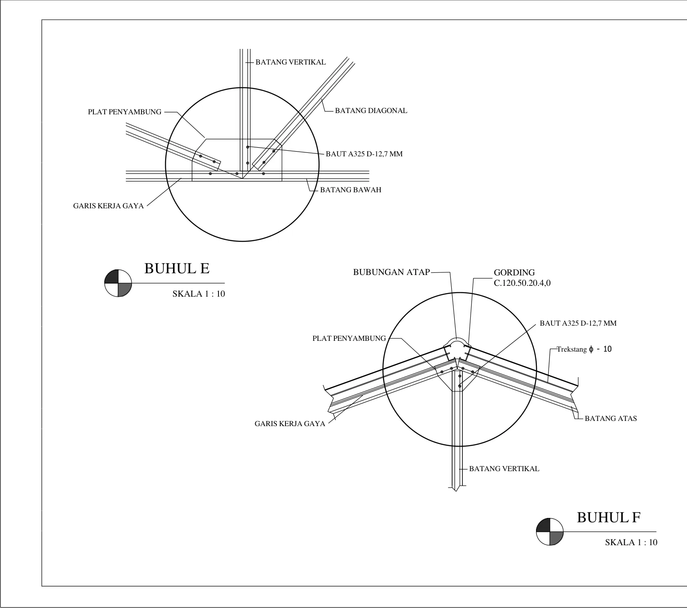
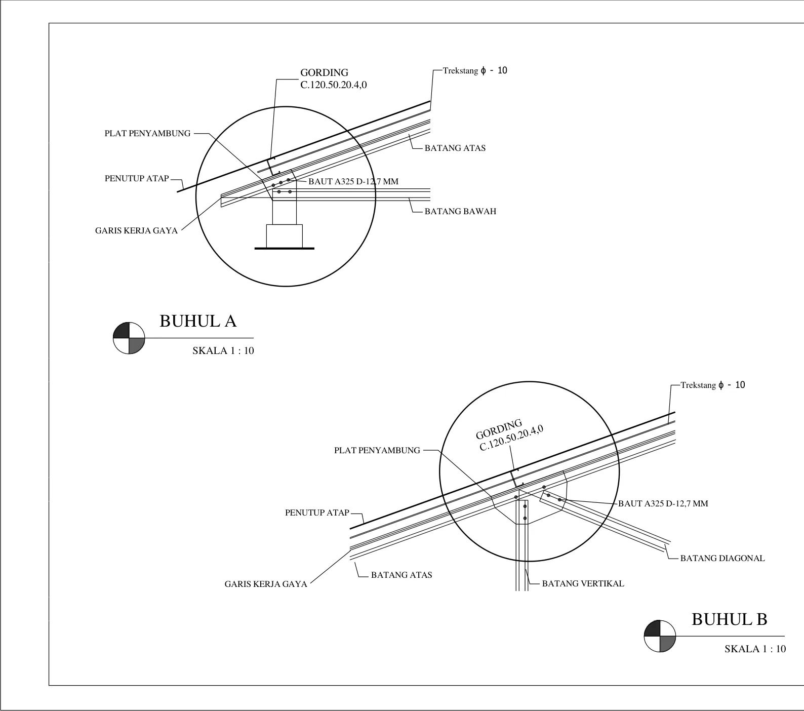
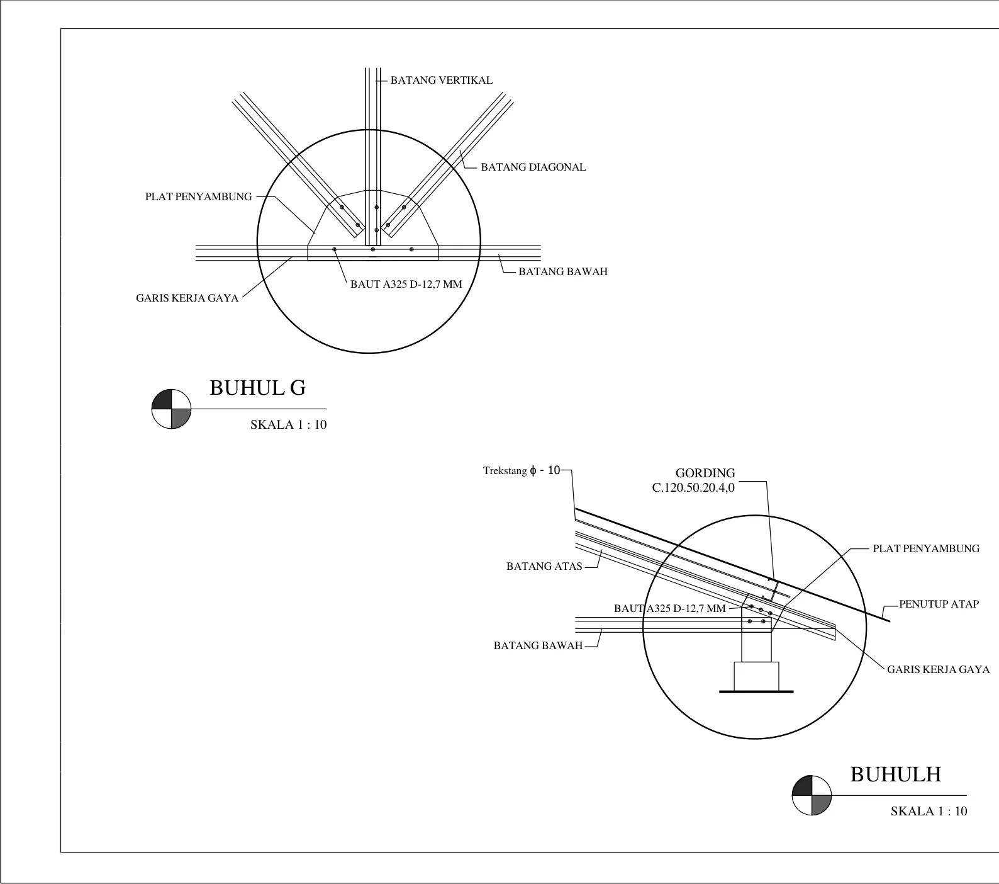

Perencanaan kuda-kuda baja profil siku (LRFD)
Merencanakan rangka atap baja profil siku dengan metode LRFD (SNI 1729:2020): pembebanan termasuk angin, gaya batang, kapasitas tarik dan tekan, sambungan baut, sampai gambar detail tiap buhul.
- Acara atau tempat
- Project based learning Struktur Baja I, Universitas Jambi
- Tahun
- 2025
- Peran saya
- Perencana dan penggambar (tugas individu).
- Hasil
- Desain batang, sambungan baut, dan gambar detail buhul
- Perangkat lunak
- AutoCAD, Microsoft Excel
- Jenis
- Perhitungan, Gambar/DED
Data perencanaan dan gambar
| Data | Nilai |
|---|---|
| Jarak antarkuda-kuda | 6 m |
| Penutup atap | Aluminium |
| Kemiringan atap | 23° |
| Mutu baja | BJ 37 |
| Beban angin | Konstruksi 5 km dari pantai |
| Alat sambung | Baut A325 D12,7 mm, pelat buhul 8 mm |
| Gording dan trekstang | C 120.50.20.4,0; trekstang Ø10 |






